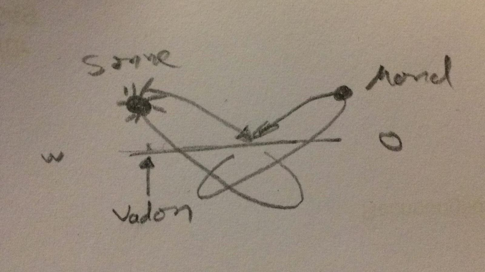

Suruthua
Kontinente
Suruthua ist eine runde Scheibe. Umringt wird sie von einer hohen unüberquerbaren Gebirgskette, dem Massiv.
Kein bekanntes Material und keine bekannte Magie kann das Gestein durchdringen oder zerstören.
Die Scheibe ist von Wasser bedeckt. Es gibt vier Kontinente;
Berethao im Nordosten,
Xaraton im Südosten,
Wirinima im Südwesten und
Loromoth im Nordwesten.
Zudem gibt es einige
freie Inseln,
die keinem Kontinent zugeordnet werden.
Sonnensystem

Eine Sonne und zwei Monde rotieren um die Scheibe. Die Monde bewegen sich auf der selben Umlaufbahn, genau entgegengesetzt von einander.
Monde
Die Monde kreisen relativ nah um die Scheibe und sind daher groß zu sehen. Einer der Monde besitzt eine zerklüftete Oberfläche aus rotem Gestein mit Flüssen und Seen aus einer lila Flüssigkeit. Der andere Mond hat eine glatte Oberfläche aus hellblauem Gestein.Sonne
Die Sonne dieser Welt ist ein blauer Riese und kreist in einem größeren Radius als die Monde auf einem ovalförmigen Ring um die Scheibe. Bei Vadon hat die Sonne den geringsten Abstand zur Scheibe, bei Illoda in den Draskenlanden den größten.Himmelskörper
Ein von Suruthua aus zu sehender Stern ist gänzlich von Wasser bedeckt. In diesem Wasser leben riesige Tiere, die Licht ausstrahlen. Durch die Bewegung der Tiere entstehen verschiedene Muster, die auf Suruthua als Sternzeichen gedeutet werden.Naturphänomene